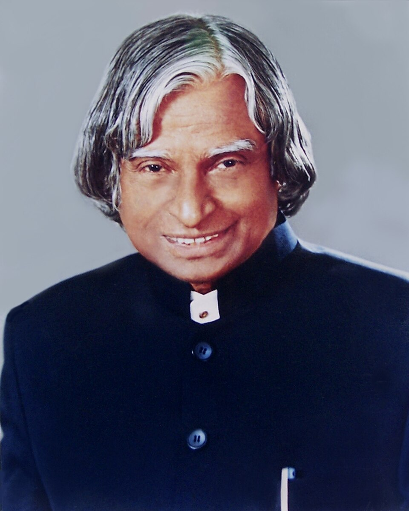

1931
Born in Rameswaram
Abdul Kalam was born on 15 October 1931 in Rameswaram, Tamil Nadu.
A TRIBUTE TO A VISIONARY
The scientist, teacher and people's president who inspired millions to dream bigger.
Explore His Journey
Dr. A. P. J. Abdul Kalam was one of India's most respected scientists, authors and public figures. Born on 15 October 1931 in Rameswaram, Tamil Nadu, he grew up in modest circumstances and developed an early interest in learning, mathematics and science.
After studying physics, Kalam pursued aerospace engineering at the Madras Institute of Technology. His professional journey took him into India's growing space and defence programmes, where he worked with organisations including the Defence Research and Development Organisation and the Indian Space Research Organisation.
Kalam became closely associated with India's satellite launch vehicle and missile development programmes. His scientific work and leadership contributed to the country's efforts toward greater technological capability and self-reliance. He became widely known as the "Missile Man of India."
In 2002, Kalam became the 11th President of India and served until 2007. Even after his presidency, he remained strongly connected with students and education. Through lectures, books and interactions with young people, he continued encouraging students to pursue knowledge, creativity and meaningful goals.
Abdul Kalam was born on 15 October 1931 in Rameswaram, Tamil Nadu.
He completed his physics degree at St. Joseph's College in Tiruchirappalli.
Kalam moved to Madras to study aerospace engineering at the Madras Institute of Technology.
His work was associated with India's successful development of the SLV-III programme and the country's space launch capabilities.
Kalam played an important organisational and scientific role in India's Pokhran-II nuclear tests.
He became the 11th President of India and served the nation from 2002 to 2007.
Kalam died on 27 July 2015 after collapsing while delivering a lecture at IIM Shillong.
"Dream, dream, dream. Dreams transform into thoughts and thoughts result in action."
Kalam's influence extended far beyond his scientific and political career. He became especially admired for the importance he placed on education and young people. His books, speeches and interactions with students made science and national development accessible to a broad audience.
His life continues to represent perseverance, curiosity, humility and service. From a small coastal town to the highest constitutional office in India, his journey demonstrated how education and determination can open extraordinary possibilities.
A dream is not what you see in sleep; a dream is something which does not let you sleep.